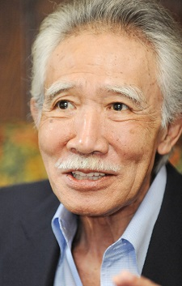

Shunji Fujimura was a Japanese voice actor and actor. He played Watari in the live action Death Note movie. In early 2017, he died of heart failure.
- Gender: Male
- Birthday: December 8, 1934
- Death: January 25, 2017
- Hometown: Kanagawa, Japan
| |
Shunji Fujimura was a Japanese voice actor and actor. He played Watari in the live action Death Note movie. In early 2017, he died of heart failure.
|
 |
|---|
| Tanaka |
|
Tanaka is one of Ciel's butler. He is an intelligent and reserved gentleman. He rarely speaks and can mostly be seen quietly tea in the corner. He was injured in the past and does little work. |
Go Back to Main Page |
Go Back to Homepage |
|
|
|
OR |
|